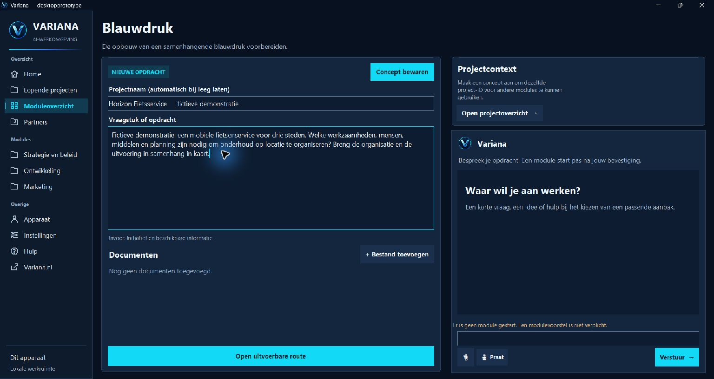
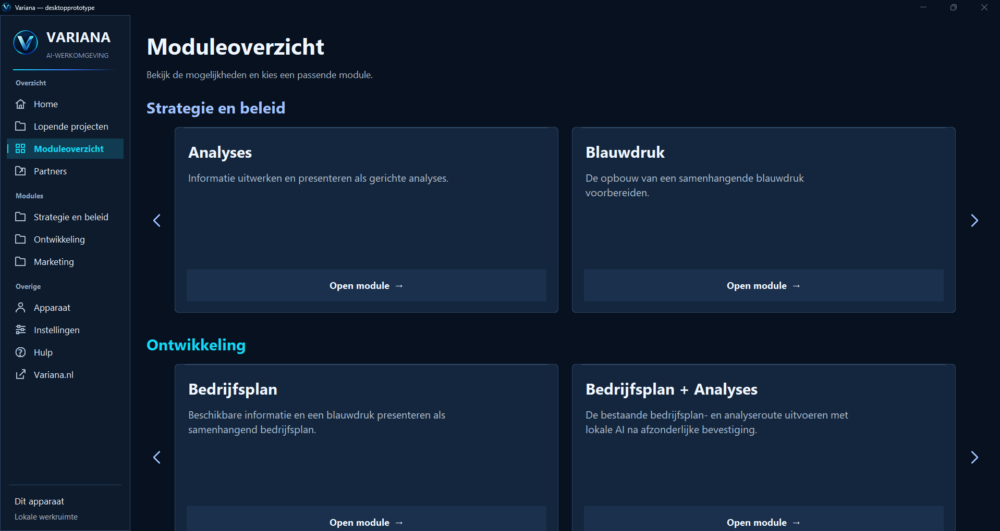
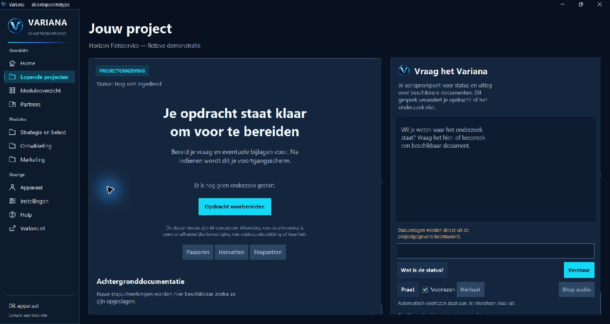

Variana Desktop
In ontwikkelingVan complexe vraag
naar een onderbouwde keuze.
Onderzoek wat je besluit bepaalt, breng je organisatie in samenhang in kaart en vertaal inzichten naar een concrete aanpak. Variana Desktop wordt gebouwd om dat werk in één eigen onderzoeksomgeving bij elkaar te brengen.

Vergroot het softwareschermDe software in actie
Van je vraag
naar een bewaard concept.
Bekijk in 31 seconden hoe je een module kiest, een fictief organisatievraagstuk invoert en het concept lokaal bewaart. Daarna vind je het terug in de projectomgeving.
Echte desktopopname, gemonteerd als korte rondleiding. Horizon Fietsservice is een fictief demonstratieproject. De opname toont voorbereiding en bewaren van invoer.
De werkomgeving
Houd vraag, context
en uitwerking bij elkaar.
De Nederlandse schermen laten de invoeromgeving en modulekeuze zien. Zo krijg je een beeld van de opbouw van je eigen onderzoeksruimte.


Vergroot het softwareschermMaak je vraag concreet
Begin met het doel van je onderzoek en de informatie die je al hebt. Dat geeft richting aan de uitwerking die je zoekt.
Kies de uitkomst die je nodig hebt
Het moduleoverzicht biedt ingangen voor inzicht, een samenhangende organisatieopbouw en gerichte specialistische vragen.
Bouw voort op dezelfde basis
De blauwdruk is bedoeld om doelen, oplossingen, mensen en middelen te verbinden. Specialistische uitwerkingen bouwen verder op die samenhang.


Vergroot het softwareschermWat je ermee wilt bereiken
Inzicht krijgen.
Samenhang zien. Gericht handelen.
Variana Desktop wordt ontwikkeld voor drie uitkomsten, afgestemd op de keuze die je wilt onderbouwen.
| Uitwerking | Je doel | Wat dit je oplevert |
|---|---|---|
| Analyses | Begrijpen wat er speelt | Bevindingen en onderbouwing over je onderwerp, met zicht op relevante factoren, aannames en informatie die nog nodig is. |
| Organisatieblauwdruk | Overzicht en een aanpak | Doelen, oplossingen, processen, mensen en middelen in samenhang, als basis voor de inrichting en uitvoering van je plannen. |
| Specialistische uitwerkingen | Een concreet vraagstuk beantwoorden | Een gerichte afweging, advies of uitwerking vanuit de blauwdruk, bijvoorbeeld voor strategie, marketing of beoordeling. |
Waarom lokaal werken?
Een eigen plek
voor je onderzoekswerk.
De huidige desktopversie bewaart je concept in lokale opslag, zodat je de ingevoerde vraag in je projectomgeving kunt terugvinden.
Variana Desktop is bedoeld als een onderzoeksomgeving op je eigen apparaat. Het doel is dat je zelf je vraagstukken organiseert en je onderzoek kunt voortzetten vanuit de context die je hebt opgebouwd.
Meer regie over je werkwijze. Een eigen werkomgeving biedt ruimte om je onderzoek te ordenen rond de beslissingen, projecten en uitwerkingen van jouw organisatie.
Continuïteit in je onderzoek. De beoogde opzet houdt vraag, uitgangspunten en organisatieblauwdruk bij elkaar, zodat een volgende uitwerking op dezelfde basis kan voortbouwen.
Lokale AI als ontwikkelrichting. We onderzoeken hoe AI op het eigen apparaat onderzoekswerk kan ondersteunen en welke onderdelen zonder internet kunnen functioneren.
Beschikbaarheid
Verken wat Variana Desktop
voor jouw organisatie kan betekenen.
De zelfstandige download is nog niet beschikbaar. Bij beschikbaarheid maken we de installatie, ondersteunde systemen en mogelijkheden voor offline gebruik bekend. Vraag nu een productpreview aan om de huidige werkomgeving te bespreken.